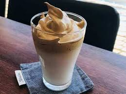

Surprisingly, I had tried one recipe which being viral during MCO.
Its name is dalgona coffee.
By the way, there is one website which I must check everyday.
Go to iclassActually, I also click this website frequently in a day during ODL.
Go to GoogleNext, I will share with you some activities I do every day during MCO
I hope you enjoy knowing what I do during MCO.
I did not explore many things during MCO.
Basically, I just eat more while doing my abundant assignments.
I hope sir will enjoy this MCO too.
Thank you.